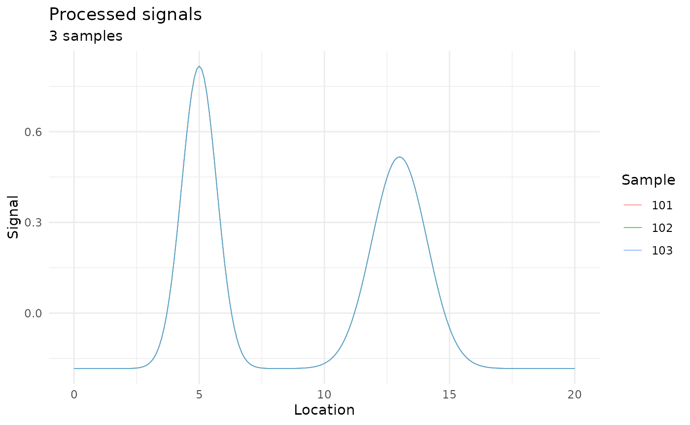

How-to: extend measure with a technique pack
Source:vignettes/articles/howto-technique-packs.Rmd
howto-technique-packs.RmdWhy build a technique pack?
A technique pack is an R package that adds recipe steps for a measurement technique while reusing measure’s data classes and workflow. The core package provides input and output steps, registry functions, and reusable processing steps. A pack owns the technique-specific analysis and declares which steps it provides.
This guide shows the registration contract, wraps
step_measure_map() in a small example step, and carries
processed measurements and peak areas into a report.
| Stage | Extension task | measure API |
|---|---|---|
| Package load | Register the package and its step metadata |
register_measure_pack(),
register_measure_step()
|
| Recipe execution | Implement or compose a step |
step_measure_map(), recipe prep() and
bake()
|
| Discovery | Inspect registered packages and steps |
measure_packs(), measure_steps()
|
| Reporting | Add a pack-specific result table or plot |
measure_results(),
measure_report_sections()
|
Register a pack when it loads
An extension package registers itself from .onLoad().
Pass the pkgname provided by R so the registered package
name stays correct if the package is renamed. Each recipe step gets one
registry entry.
.onLoad <- function(libname, pkgname) {
if (requireNamespace("measure", quietly = TRUE)) {
measure::register_measure_pack(
pack_name = pkgname,
technique = "LC-MS",
description = "Mass spectrometry workflows"
)
measure::register_measure_step(
step_name = "step_example_center_spectrum",
pack_name = pkgname,
category = "preprocessing",
description = "Center each spectrum before peak analysis"
)
}
}The registry is metadata for discovery. Recipe behavior still comes
from the step function and its prep()/bake()
implementation. A pack can implement a step itself, or compose an
existing public step when that already expresses the needed
operation.
Discovery reflects what has registered in the current R session. For
example, loadNamespace("measure.sec") runs the companion
package’s .onLoad() and makes its SEC/GPC steps
discoverable. Its metadata stays in the registry after the companion is
unloaded. Loading the companion again updates the same entries. To start
with a fresh registry, start a new R session and load the packs you
need.
A runnable step built from the public API
This minimal pack step centers each sample’s measurements. It
delegates the recipe lifecycle to step_measure_map(), so
the wrapper does not need to reimplement how recipes select, prep, and
bake measurement columns.
step_example_center_spectrum <- function(recipe, measures = NULL) {
measure::step_measure_map(
recipe,
fn = ~ {
.x$value <- .x$value - mean(.x$value, na.rm = TRUE)
.x
},
measures = measures
)
}The next example uses simulated peak shapes with an arbitrary
location coordinate from 0 to 20. The signal has no physical units or
calibration. In long data, the time column becomes the
measurement location, while sample_id stays outside the
measurement and is retained as an ID.
peak_axis <- seq(0, 20, length.out = 201)
peak_data <- tidyr::expand_grid(
sample_id = 101:103,
time = peak_axis
) |>
mutate(
concentration = c(1.0, 2.0, 3.0)[match(sample_id, 101:103)],
signal = 0.02 +
exp(-0.5 * ((time - 5) / 0.7)^2) +
0.7 * exp(-0.5 * ((time - 13) / 1.1)^2)
)
head(peak_data)
#> # A tibble: 6 × 4
#> sample_id time concentration signal
#> <int> <dbl> <dbl> <dbl>
#> 1 101 0 1 0.0200
#> 2 101 0.1 1 0.0200
#> 3 101 0.2 1 0.0200
#> 4 101 0.3 1 0.0200
#> 5 101 0.4 1 0.0200
#> 6 101 0.5 1 0.0200The example recipe keeps each spectrum in one row after ingestion, then centers it, detects peaks, integrates their areas, and converts the peak list to ordinary predictor columns.
processing <- recipe(concentration ~ ., data = peak_data) |>
update_role(sample_id, new_role = "id") |>
step_measure_input_long(signal, location = vars(time)) |>
step_example_center_spectrum() |>
step_measure_peaks_detect(min_height = 0.2, min_distance = 10) |>
step_measure_peaks_integrate()
processed <- bake(prep(processing), new_data = NULL)
peak_recipe <- processing |> step_measure_peaks_to_table(max_peaks = 2)
peak_features <- bake(prep(peak_recipe), new_data = NULL)
peak_features |>
select(sample_id, concentration, starts_with("peak_"))
#> # A tibble: 3 × 8
#> sample_id concentration peak_1_location peak_1_height peak_1_area
#> <int> <dbl> <dbl> <dbl> <dbl>
#> 1 101 1 5 0.817 3.68
#> 2 102 2 5 0.817 3.68
#> 3 103 3 5 0.817 3.68
#> # ℹ 3 more variables: peak_2_location <dbl>, peak_2_height <dbl>,
#> # peak_2_area <dbl>The peak steps are public recipe constructors. A technique pack can register a wrapper that applies domain-specific defaults, validation, or metadata while continuing to use these shared steps where they fit.
Report measurements alongside peak areas
Keep the baked measurements before converting peaks to predictor
columns. The result wrapper selects the signal to plot and the sample
metadata to carry into the summary. In a multi-detector analysis, pass
the detector column name to measures.
result <- measure_results(processed, id_cols = "sample_id")
sections <- measure_report_sections(result)
sections[["Sample summary"]]
#> # A tibble: 3 × 7
#> sample_id n_points n_missing mean sd min max
#> <int> <int> <int> <dbl> <dbl> <dbl> <dbl>
#> 1 101 201 0 2.75e-18 0.276 -0.183 0.817
#> 2 102 201 0 2.75e-18 0.276 -0.183 0.817
#> 3 103 201 0 2.75e-18 0.276 -0.183 0.817
sections[["Measurements"]]
Centered signals from the three simulated samples.
A technique pack can include the integrated peak areas alongside
these sections. Add a subclass in the pack’s constructor and register
its method for measure_report_sections() in the pack
namespace.
peak_results <- function(processed, peak_areas) {
x <- measure::measure_results(processed, id_cols = "sample_id")
x$peak_areas <- peak_areas
class(x) <- c("peak_results", class(x))
x
}
#' @importFrom measure measure_report_sections
#' @export
measure_report_sections.peak_results <- function(x, ...) {
sections <- NextMethod()
sections[["Integrated peak areas"]] <- x$peak_areas
sections
}With the pack loaded, create the report using the same sample IDs as
the processed spectra. Use an .html filename for a
standalone HTML report or .docx for a Word document.
areas <- dplyr::select(peak_features, sample_id, dplyr::ends_with("_area"))
result <- peak_results(processed, areas)
measure::render_measure_report(result, "peak-report.html", title = "Peak areas")Inspect registered packs and steps
The public registry functions list packs and their registered steps. This example inspects the registry as it exists in the current session; it does not register a demonstration pack or change registry state.
registered_packs <- measure_packs()
registered_steps <- measure_steps()
registered_packs
#> # A tibble: 1 × 4
#> name technique version description
#> <chr> <chr> <chr> <chr>
#> 1 measure general 0.0.1.9004 Core measurement preprocessing steps
registered_steps
#> # A tibble: 96 × 5
#> step_name pack_name category description technique
#> <chr> <chr> <chr> <chr> <chr>
#> 1 step_measure_input_long measure io Convert long data… general
#> 2 step_measure_input_wide measure io Convert wide data… general
#> 3 step_measure_output_long measure io Convert measure t… general
#> 4 step_measure_output_wide measure io Convert measure t… general
#> 5 step_measure_savitzky_golay measure smoothing Savitzky-Golay sm… general
#> 6 step_measure_smooth_ma measure smoothing Moving average sm… general
#> 7 step_measure_smooth_median measure smoothing Median filter smo… general
#> 8 step_measure_smooth_gaussian measure smoothing Gaussian smoothing general
#> 9 step_measure_smooth_wavelet measure smoothing Wavelet smoothing general
#> 10 step_measure_filter_fourier measure smoothing Fourier filtering general
#> # ℹ 86 more rowsA real pack: measure.sec
measure.sec is a companion package that uses this
registry for Size Exclusion Chromatography steps, including
measure.sec::step_sec_baseline(). Loading the package
registers its pack and step metadata. The check below runs only when
that optional package is installed; no dependency is added to
measure.
if (requireNamespace("measure.sec", quietly = TRUE)) {
measure_steps(packs = "measure.sec") |>
filter(step_name %in% c("step_sec_baseline", "step_sec_mw_averages"))
} else {
message("Skipped: install the optional measure.sec package to inspect its registry entries.")
}
#> Skipped: install the optional measure.sec package to inspect its registry entries.For a complete SEC baseline recipe using
measure.sec::step_sec_baseline(), see the baseline correction guide.
Package checklist
- Put the extension step and its
prep()/bake()methods in the pack package. - Register the package name with the
.onLoad()pkgnameargument. - Register exported step names with concise categories and descriptions.
- Keep sample identifiers and measurement axes explicit in recipe examples.
- Use public measure constructors where they already express the operation.
- Add tests in the extension package for the recipe lifecycle and registry entry.
See also
- Peak operations - Detect, integrate, and export peaks
- Preprocessing reference - Core preprocessing constructors
- Baseline correction - R and SEC baseline workflows